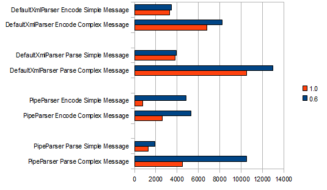

Version 1.1
Version 1.1 is API compatible with version 1.0 (aside from a method change in the Message interface, but this should not generally be directly extended). Upgrading should be as simple as dropping in the updated JARs. This release includes several important bugfixes and a number of great contributions. See the Changelog for more information.
Noteworthy new features
Structure Class Generator Maven Plugin
HAPI now includes a Maven Plugin which can be used to translate an HL7 Conformance Profile into a set of HAPI structure objects representing Message/Group/Segment types. See the conformance page for more information.
QuickStart method to initialize Messages
AbstractMessage provides an "initQuickstart" method for quickly setting values in the MSH segment to standard default values:
public static void main(String[] args) throws HL7Exception, IOException {
ORU_R01 msg = new ORU_R01();
msg.initQuickstart("ORU", "R01", "T");
System.out.println(msg);
// MSH|^~\&|||||20110220174633.569-0500||ORU^R01^ORU_R01|436|T|2.4
}Convenience methods for temportal datatypes
HAPI now has some pleasant convenience methods for bridging the gap between HL7's Date/Time types and Java Date/Calendar types:
ORU_R01 msg = new ORU_R01();
msg.initQuickstart("ORU", "R01", "T");
TS ts = msg.getPATIENT_RESULT().getORDER_OBSERVATION().getORC().getDateTimeOfTransaction();
DTM time = ts.getTime();
time.setValue("20110201121233");
Date date = time.getValueAsDate();
System.out.println(date);
// Tue Feb 01 12:12:33 EST 2011
Calendar cal = new GregorianCalendar();
cal.set(Calendar.YEAR, 2010);
cal.set(Calendar.MONTH, 0);
cal.set(Calendar.DATE, 29);
cal.set(Calendar.HOUR_OF_DAY, 12);
cal.set(Calendar.MINUTE, 59);
time.setValueToMinute(cal);
System.out.println(ts.encode());
// 201001291259
cal = time.getValueAsCalendar();
System.out.println(cal.getTime());
// Tue Feb 01 12:12:33 EST 2011Application Exception Handlers
Application instances may now declare an additional interface which allows them to process exceptions and optionally override the system generated response message. (Thanks to Gabriel Landais)
/**
* Example Application processor which always attempts to generate an
* ACK, even if exceptions are thrown
*/
private class MyApplication implements Application, ApplicationExceptionHandler {
public String processException(String incomingMessage, String outgoingMessage, Exception e) throws HL7Exception {
// Process/log the exception..?
ADT_A01 message = new ADT_A01();
try {
message.parse(incomingMessage);
} catch (HL7Exception e2) {
// ignore
}
// create a new ACK message
ACK ack = new ACK();
try {
ack.initQuickstart("ACK", null, null);
} catch (IOException e1) {
throw new HL7Exception(e1);
}
ack.getMSA().getMsa1_AcknowledgmentCode().setValue("AA");
ack.getMSA().getMsa2_MessageControlID().setValue(message.getMSH().getMessageControlID().getValue());
return ack.encode();
}
public Message processMessage(Message in) throws ApplicationException, HL7Exception {
// do some processing
try {
return in.generateACK();
} catch (IOException e) {
throw new HL7Exception(e);
}
}
public boolean canProcess(Message in) {
return true;
}
}Version 1.0
Version 1.0 contains a number of bugfixes. See the Changelog for more information.
Noteworthy new features
Parser Speed Improvements
For version 1.0, a major effort to profile and speed up the parser was made (with some help from Christian Ohr). This resulted in a fairly significant improvement. The figure above shows a comparison between performing parses and encodes on versions 0.6 and 1.0. The simple message used is a very simple ADT^A01 with minimal data. The complex message used is a fairly long ORU^R01 with 50 segments. Times are in millis (shorter is better).
(Tests performed 1000 iterations of a parse or an encode on an Athlon64 X2 2.2Ghz CPU with 6Gb of RAM)
Convenience Parse and Encode Methods
HAPI structures now have a few new convenience methods to parse and encode various structures. For example, messages may have values parsed in through the parse(String) method, and messages may be re-encoded using the encode() method.
String string = "MSH|^~\\&|LABGL1||DMCRES||19951002185200||ADT^A01|LABGL1199510021852632|P|2.2\r"
+ "PID|||T12345||TEST^PATIENT^P||19601002|M||||||||||123456\r"
+ "PV1|||NER|||||||GSU||||||||E||||||||||||||||||||||||||19951002174900|19951006\r";
ADT_A01 a01 = new ADT_A01();
a01.parse(string); // Parses the text into the message object using PipeParser (by default, can be changed)
System.out.println(a01.encode()); // Re-encodes the message using the default parserSegments and fields also have parse() and encode() methods
String pid = a01.getPID().encode();
System.out.println(pid); // PID|||T12345||TEST^PATIENT^P||19601002|M||||||||||123456
String messageType = a01.getMSH().getMessageType().encode();
System.out.println(messageType); // ADT^A01
// Set the message type the old way
a01.getMSH().getMessageType().getMessageType().setValue("ADT");
a01.getMSH().getMessageType().getTriggerEvent().setValue("A04");
// A quicker way of doing it
a01.getMSH().getMessageType().parse("ADT^A04");Convenience Numbered Segment Getters
Segments now have a second set of accessors with numbers in them, so that if you want (for instance) to jump straight to PID-3 using your IDE's autocomplete without remembering the name of the field, you can do that.
// The old way
a01.getPID().getPatientIDInternalID(0).parse("1234");
// The alternate way
a01.getPID().getPid3_PatientIDInternalID(0).parse("1234");Convenience ACK/NAK generators
This is a great idea from the Open eHealth HAPI extensions project.
The message class can now generate a corresponding ACK or NAK based on the contents of the message's own contents.
// Parse the message
String string = "MSH|^~\\&|LABGL1||DMCRES||19951002185200||ADT^A01|LABGL1199510021852632|P|2.2\r"
+ "PID|||T12345||TEST^PATIENT^P||19601002|M||||||||||123456\r"
+ "PV1|||NER|||||||GSU||||||||E||||||||||||||||||||||||||19951002174900|19951006\r";
Message message = new PipeParser().parse(string);
// Generate an ACK
Message ack = message.generateACK();
System.out.println(ack.encode());
// MSH|^~\&|||||20090926173004.067-0500||ACK|225|P|2.2
// MSA|AA|LABGL1199510021852632
// Generate a NAK
Message nak = message.generateACK("AR", new HL7Exception("Error Message", HL7Exception.ACK_AE));
System.out.println(nak.encode());
// MSH|^~\&|||||20090926180218.494-0500||ACK|231|P|2.2
// MSA|AR|LABGL1199510021852632
// ERR|^^^2&ERROR&hl70357&&Error MessageBetter handling of unexpected segments in PipeParser
Thanks to an overhaul of the PipeParser's inner workings, it can now handle unexpected segments (such as custom Z-segments in standard messages) in a much more predictable way, reducing the need for custom classes much of the time.
Consider the following code sample (note the custom 4th segment- ZPI):
String messageText =
"MSH|^~\\&|IRIS|SANTER|AMB_R|SANTER|200803051508||ADT^A01|263206|P|2.5\r"
+ "EVN||200803051509||||200803031508\r"
+ "PID|||5520255^^^PK^PK~ZZZZZZ83M64Z148R^^^CF^CF~ZZZZZZ83M64Z148R^^^SSN^SSN^^20070103^99991231~^^^^TEAM||ZZZ^ZZZ||19830824|F||||||||||||||||||||||N\r"
+ "ZPI|Fido~Fred|13\r"
+ "PV1||I|6402DH^^^^^^^^MED. 1 - ONCOLOGIA^^OSPEDALE MAGGIORE DI LODI&LODI|||^^^^^^^^^^OSPEDALE MAGGIORE DI LODI&LODI|13936^TEST^TEST||||||||||5068^TEST2^TEST2||2008003369||||||||||||||||||||||||||200803031508\r"
+ "PR1|1||1111^Mastoplastica|Protesi|20090224|02|";
// HAPI will still parse this message fine
ADT_A03 message = (ADT_A03) new PipeParser().parse(messageText);Previously, upon hitting the unexpected ZPI segment, the parser would recurse as deep as it could into the first group it found, and would drop the unexpected segment at the tail of that, leaving you with segments in completely unexpected places.
The new behaviour is that upon finding a segment that isn't supposed to be found anywhere in the message, a custom segment is inserted into the current location, and parsing continues normally.
Note that if you have code depending on the old behaviour, PipeParser has a setLegacyMode and corresponding system property that can be set (see the javadoc)
Insert and delete segment repetitions
It is now possible to insert and delete repetitions of segments and segment groups at arbitrary positions within their parent group.
// Insert a new observation group (OBX-NTE) segment between reps 1 and 2
ORU_R01_OBSERVATION newGroup = oruR01.getPATIENT_RESULT().getORDER_OBSERVATION().insertOBSERVATION(1);
newGroup.getOBX().getSetIDOBX().setValue("2");
// Delete the observation group (OBX-NTE) segment between reps 1 and 2
ORU_R01_OBSERVATION obx = oruR01.getPATIENT_RESULT().getORDER_OBSERVATION().removeOBSERVATION(1);